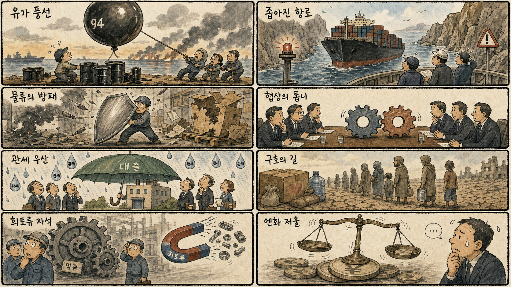
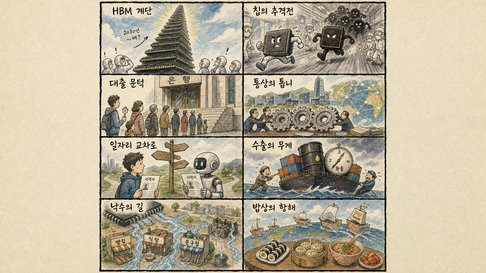

01
뉴욕증시, 유가 상승·실적 경계감에 하락...나스닥 0.57%↓
내용요약 7월 22일 미국장은 국제유가 상승과 빅테크 실적 경계로 다우 -0.01%, S&P500 -0.14%, 나스닥 -0.57%로 마감했습니다.
예상여파 한국장은 성장주에 부담이 예상되며 원유 가격과 원/달러 환율, 외국인 선물 수급을 우선 확인해야 합니다.
MORNING_BRIEFING_20260723
작성 시각: 2026-07-23 06:38 KST · 직전 미국장과 2026-07-23 KST 당일 공개 기사 기준
7월 22일 미국 정규장은 다우 -0.01%, S&P 500 -0.14%, 나스닥 -0.57%로 하락했습니다. 국제유가 급등과 실적 경계가 지수를 눌렀지만 엔비디아·슈퍼마이크로 등 AI 인프라 종목은 강해, 한국장도 지수보다 반도체·서버·전력 설비의 선별 흐름이 예상됩니다.
| 지수 | 종가 | 등락률 | 한국 증시 영향 |
|---|---|---|---|
| 다우존스 | 52,218.58 | -0.01% | 보합권 마감으로 경기민감주의 방향성보다 유가와 실적 변수가 부각 |
| S&P 500 | 7,498.96 | -0.14% | 대형주 전반의 실적 경계가 외국인 위험선호를 제한할 가능성 |
| 나스닥 종합 | 25,690.90 | -0.57% | 기술주 약세가 국내 성장주에 부담이나 AI 서버 강세는 종목별 완충 |
유가와 실적 경계로 기술주 중심의 차익실현이 우세했습니다.
엔비디아와 AI 서버주는 강해 HBM·전력 인프라 연결고리는 유지됐습니다.
미·이란 대치와 항로 불안이 물가·금리 우려를 다시 키웠습니다.
환율과 외국인 선물 수급을 보며 실적형 종목 중심으로 선별할 구간입니다.
| 종목 | 등락률 | 종가 비교와 메모 |
|---|---|---|
| 삼성전자 | +0.58% | 259,000원 → 260,500원. 미국 기술주와 AI칩 투자 연결 |
| LS ELECTRIC | +0.79% | 189,100원 → 190,600원. 데이터센터 전력망 수요 연결 |
| 한화에어로스페이스 | -0.89% | 899,000원 → 891,000원. 세계 안보·방공 지출 연결 |
| 지수 | 종가 | 등락률 | 해석 |
|---|---|---|---|
| 다우존스 | 52,218.58 | -0.01% | 보합권 마감으로 경기민감주의 방향성보다 유가와 실적 변수가 부각 |
| S&P 500 | 7,498.96 | -0.14% | 대형주 전반의 실적 경계가 외국인 위험선호를 제한할 가능성 |
| 나스닥 종합 | 25,690.90 | -0.57% | 기술주 약세가 국내 성장주에 부담이나 AI 서버 강세는 종목별 완충 |
AI 서버·HBM, 정유, 해운, 방산, 전력·냉각 인프라
항공·화학, 이차전지, 고평가 성장주, 달러·에너지 비용 민감 내수주
내용요약 7월 22일 미국장은 국제유가 상승과 빅테크 실적 경계로 다우 -0.01%, S&P500 -0.14%, 나스닥 -0.57%로 마감했습니다.
예상여파 한국장은 성장주에 부담이 예상되며 원유 가격과 원/달러 환율, 외국인 선물 수급을 우선 확인해야 합니다.
내용요약 엔비디아가 3%, 슈퍼마이크로가 24% 상승했다는 보도로 AI 서버와 반도체 내부의 강한 개별 종목 장세가 확인됐습니다.
예상여파 국내 HBM·서버 부품·냉각 기업으로 관심이 번질 수 있으나 미국 지수 하락 속 추격 매수의 지속성을 봐야 합니다.
내용요약 테슬라의 2분기 주당순이익이 시장 예상치를 크게 밑돌면서 시간외 주가가 3% 넘게 하락했습니다.
예상여파 국내 이차전지·전장 부품주는 전기차 수요와 마진 우려를 반영해 실적 차별화가 커질 수 있습니다.
내용요약 알파벳은 2분기 호실적을 냈지만 테슬라 실적은 부진해 빅테크와 전기차의 온도차가 나타났습니다.
예상여파 AI 광고·클라우드 투자는 반도체 수요를 지지하는 반면 전기차 공급망에는 수익성 압박이 이어질 수 있습니다.
내용요약 슈퍼마이크로가 서버 마진 개선 소식에 20% 넘게 급등해 AI 서버 사업의 수익성 회복 기대가 부각됐습니다.
예상여파 국내 서버 부품·전력·냉각 밸류체인도 거래대금이 늘 수 있지만 실제 수주와 영업이익 연결 여부가 중요합니다.
미국 기술주 약세와 유가 상승은 코스피·코스닥의 상단을 제한할 가능성이 큽니다. 다만 엔비디아와 슈퍼마이크로의 강세는 HBM·AI 서버·전력 설비에 종목별 모멘텀을 남깁니다. 개장 초 원/달러 환율, 외국인 현·선물 순매수, 삼성전자와 SK하이닉스의 상대강도를 함께 확인하는 전략이 유효합니다.
| 한국 종목 | 연결 이유 | 단기 확인 포인트 |
|---|---|---|
| SK하이닉스 | 엔비디아 강세와 2030년 HBM 수요 7배 전망이 고대역폭 메모리의 장기 성장 논리를 지지합니다. | 외국인 순매수, 미국 반도체 흐름, 장 초반 갭 유지 |
| HD현대일렉트릭 | 오픈AI 인프라 지출 증액과 노후 데이터센터 병목이 전력기기·변압기 수요로 연결됩니다. | 전력기기 동반 거래대금, 수주 공시, 기관 수급 |
| S-Oil | 미·이란 대치로 브렌트유가 94달러대로 올라 정유 재고평가와 마진 기대가 부각될 수 있습니다. | 유가 지속성, 정제마진, 원/달러 환율과 항공·화학 대비 상대강도 |
정규장 이후 실적이 미국 선물과 국내 AI·전기차 공급망에 미치는 영향을 봅니다.
브렌트유 상승이 정유 강세와 항공·화학 약세로 분화하는지 점검합니다.
정상회담 준비가 관세·수출통제 완화 기대를 높이는지 확인합니다.
원/달러 환율과 반도체 대형주 현·선물 동반 매매를 확인합니다.
핵심 요약: AMD·앤트로픽의 AI칩 동맹, HBM 장기 성장, 오픈AI의 인프라 지출 확대가 컴퓨팅 수요를 지지합니다. 동시에 노후 데이터센터의 물리적 병목과 AI의 고용 대체 충격이 투자 효율과 사회적 비용을 함께 묻고 있습니다.
내용요약 노후 전산센터의 전력·냉각·공간 한계가 최신 GPU 도입을 막아 금융권 AI 전환의 병목이 되고 있다는 보도입니다.
예상여파 GPU 구매만으로 끝나지 않는 전력·냉각·네트워크 교체 수요가 데이터센터 설비와 전력기기 업종으로 이어질 수 있습니다.
내용요약 KDI 분석을 인용해 AI가 10년 뒤 총요소생산성을 최대 3.5% 높이는 반면 연간 약 25만 개의 일자리를 대체할 수 있다고 전했습니다.
예상여파 생산성 수혜와 고용 충격이 함께 제시돼 재교육·업무전환 솔루션과 기업용 AI의 투자 효율 검증이 중요해집니다.
내용요약 AMD가 생성형 AI 기업 앤트로픽과 AI칩 공급 동맹을 구축해 엔비디아 중심 시장에 도전한다는 소식입니다.
예상여파 가속기 경쟁이 확대되면 HBM과 첨단 패키징 수요처가 다변화될 수 있어 국내 메모리 공급망에 우호적입니다.
내용요약 AI 연산 확대에 따라 HBM 수요가 2030년까지 현재의 7배 수준으로 성장할 수 있다는 전망입니다.
예상여파 메모리 대형사와 TSV·패키징 장비 기업의 중장기 수주 기대를 지지하지만 증설 속도와 가격 협상이 핵심입니다.
내용요약 오픈AI가 2030년까지 인프라 지출 계획을 6천억 달러에서 7천5백억 달러로 25% 늘렸다는 보도입니다.
예상여파 서버·전력·냉각·광통신 수요의 장기 가시성을 높이지만 대규모 자금 조달과 수익화 속도도 함께 점검해야 합니다.
핵심 요약: 미·이란 대치와 홍해 선박 경고가 유가·운임을 밀어 올리고, 러시아·우크라이나 전쟁은 민간 물류망을 위협합니다. 미중은 고위급 교류를 준비하는 반면 관세 피해국은 금융 지원으로 충격 흡수에 나섰습니다.
내용요약 미국이 이란의 협상 의지가 낮다고 평가하면서 공급 불안이 커져 국제유가가 3% 급등했다는 보도입니다.
예상여파 정유에는 마진 기대가 생길 수 있지만 항공·화학·운송과 소비자물가에는 비용 부담으로 작용합니다.
내용요약 러시아·우크라이나 전쟁의 공격 범위가 민간 기업 물류창고까지 번져 유통망과 재고가 위협받고 있다는 보도입니다.
예상여파 곡물·부품 운송 차질과 보험료 상승이 유럽 물류비를 높이고 방산·해운 위험 프리미엄을 자극할 수 있습니다.
내용요약 브라질 정부가 관세 충격을 받은 기업에 36억6천만 달러 규모의 금융 지원을 발표했습니다.
예상여파 보호무역 비용을 재정·금융으로 흡수하는 정책이 확산하면 글로벌 교역의 가격 왜곡과 재정 부담이 커질 수 있습니다.
내용요약 후티가 봉쇄 구역에 진입하지 말라는 무선 경고를 선박에 보내 홍해 항로의 긴장이 다시 높아졌습니다.
예상여파 우회 운항과 전쟁보험료가 늘면 해운 운임과 에너지 운송비가 상승해 공급망 비용을 밀어 올릴 수 있습니다.
내용요약 미중 외교 당국이 정치·외교 채널을 가동하고 다음 단계의 고위급 교류를 준비하기로 했다는 보도입니다.
예상여파 정상외교 진전 여부가 관세와 첨단기술 수출통제 기대를 좌우해 아시아 반도체·수출주 변동성에 영향을 줍니다.

핵심 요약: HBM 장기 수요와 중국 반도체 추격이 산업 경쟁의 양면을 보여주고 있습니다. 가계대출 규제와 AI 고용 충격은 내수 부담을 키우는 반면 통상 대응과 K푸드 수출은 성장 경로를 넓히는 변수입니다.
내용요약 미국의 기술 봉쇄 속에서 성장한 중국 화웨이 계열 반도체 생태계가 한국 기업의 경쟁 상대로 부상했다는 분석입니다.
예상여파 국내 메모리·파운드리는 기술 격차와 고객 다변화가 중요해지고 중국향 장비·소재 규제 위험도 커질 수 있습니다.
내용요약 가계대출 총량 관리가 실수요자의 자금 접근까지 좁힐 수 있어 정교한 보완책이 필요하다는 지적입니다.
예상여파 은행의 대출 성장과 건전성은 안정될 수 있지만 주택 거래와 내수에는 단기 자금 경색 부담이 남습니다.
내용요약 세종시가 글로벌 규제와 통상 환경 변화에 대응할 통상산업정책센터를 출범시켰습니다.
예상여파 지역 수출기업의 규제 대응과 공급망 정보 접근은 개선될 수 있으며 실제 기업 지원 프로그램의 범위가 관건입니다.
내용요약 AI 확산이 청년층의 양질 일자리를 잠식할 수 있어 단기 지원보다 직무 재설계와 구조 개혁이 필요하다는 보도입니다.
예상여파 교육·채용 플랫폼은 전환 훈련 수요가 늘 수 있고 기업은 신입 채용과 자동화 투자의 균형을 재검토할 가능성이 큽니다.
내용요약 K푸드플러스 수출이 70억 달러 신기록을 세운 뒤 160억 달러 목표를 향해 시장 다변화를 추진한다는 보도입니다.
예상여파 식품·농기계·스마트팜 기업에는 해외 유통망 확대가 기회지만 환율·물류비와 현지 규제가 수익성을 좌우합니다.
